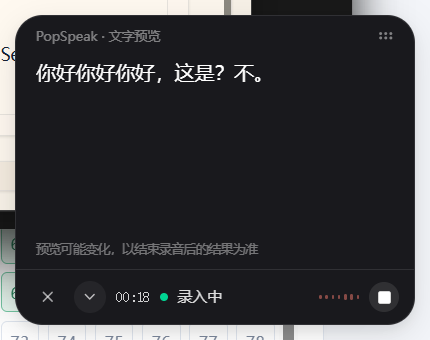
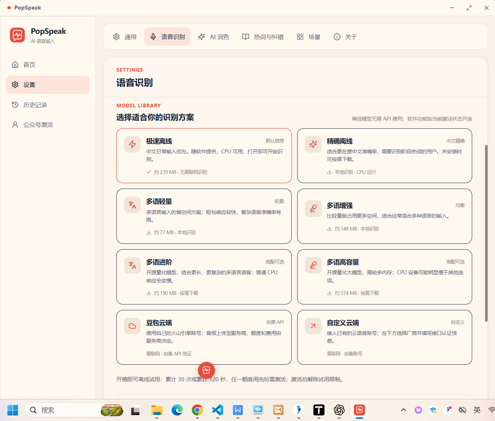

POP 结果窗
先在独立窗口里确认，
不再追着真实光标回退修改。
复制、自动复制、排版、置顶与语言状态都集中在一个轻量窗口里。 富文本编辑器、聊天框或代码窗口不会因为中途修订而被反复打断。
结果窗处理纯文本，不保留目标应用原有的富文本样式。
说话时看见近似文字，结束后由你选择的模型完成最终校正。 在独立 POP 结果窗里复制、排版、修改，再把内容送往任何应用。
正在录音 · 近似预览
我想把今天讨论的三个重点整理出来。
从说话、预览、校正到落笔，每一步都能看见、能干预、能撤回。
POP 结果窗
复制、自动复制、排版、置顶与语言状态都集中在一个轻量窗口里。 富文本编辑器、聊天框或代码窗口不会因为中途修订而被反复打断。
结果窗处理纯文本，不保留目标应用原有的富文本样式。
模型无关预览
一条本地辅路负责持续显示近似文字，另一条主路交给所选本地或云端模型。 录音结束后，最终结果自动接管。
专业词与热词
支持引擎会在解码阶段参考专业词；其他引擎也能通过本地纠错统一人名、产品名和术语。 每种模型都明确标注能力边界。
离线与多语种
中文优先，也可选择覆盖近百种语言的多语种模型。中文方言与混合语言表现会随模型、设备和环境变化，界面会如实说明。
完整本地历史
按日期回看，搜索每一段内容，并直接复制、重新编辑或删除。历史与专业词默认保存在本机。
实时感来自独立辅路，准确性由最终模型负责。二者互不污染。
麦克风先启动，模型冷启动也不会吃掉开头。
音频每 100ms 进入辅路，聚合足够上下文后持续修订。
所选模型独立完成整段识别，替换近似文字。
确认、排版、复制，或进入编辑器再修改。
注：100ms 是预览音频传输粒度，不是端到端出字承诺。首次可读预览通常需要积累约 0.8 秒语音，实际速度取决于 CPU、模型、麦克风和环境。
POP 结果窗借鉴截图工具“先捕获、再处理”的工作流，但服务的是文字：不抢真实输入框，不依赖连续回退，也不把中间错误留在文档里。

本地优先，也允许自备云端账号。模型名称、大小、语言和热词能力公开标注，不用猜。
中文日常输入 · 本地 CPU · 轻量
中文增强 · 解码热词 · 本地 CPU
多语种 · 多种体积 · 本地 CPU
字节、阿里、腾讯、讯飞、百度等 BYOK

| 能力 | PopSpeak | 典型云端语音助手 | 常见单模型离线工具 |
|---|---|---|---|
| 中间结果 | 所有最终模型共享本地预览 | 取决于云接口 | 多数结束后出字 |
| 落笔方式 | POP 结果窗 / 复制 / 编辑后确认 | 直接上屏为主 | 直接上屏或剪贴板 |
| 专业词 | 解码热词 + 本地纠错分层标注 | 取决于厂商 | 常见为结果替换 |
| 隐私边界 | 默认本地；云端需用户主动配置 | 通常需要联网 | 通常本地 |
| 历史闭环 | 回看、搜索、复制、编辑、删除 | 因产品而异 | 常见为基础记录 |
| 可审计性 | MIT 开源，构建与数据边界公开 | 通常闭源 | 因项目而异 |
比较为产品形态概括，不代表所有同类产品；具体能力以各产品当前版本为准。
请把今天讨论的三个重点整理出来。
15:10 · 文档这是一段可以再次检查和复用的识别结果。
14:26 · 浏览器离线模式下，语音不需要离开这台电脑。
11:08 · 笔记最近的识别结果不只是日志，而是可再次进入工作流的内容库。找到一段话，复制它、改好它，或者彻底删除它。
离线识别、专业词与历史保存在设备上；只有你主动选择云端服务时，数据才会发送给相应服务商。
PopSpeak 自有源码采用 OSI 批准的 MIT 许可证，允许使用、修改、分发和商业使用；第三方模型与运行库继续遵守各自许可证。
查看仓库中的 完整许可证正文。“PopSpeak”名称与官方标识属于项目品牌；代码许可证不代表 OSI 对本项目背书。
01 microphone.capture()
02 ├─ preview_lane 100ms PCM
03 │ └─ approximate_text()
04 └─ selected_engine
05 └─ authoritative_result()
06
07 final → terms → optional_polish
08 → POP window → your app指所有最终模型都能共享 PopSpeak 的本地近似预览辅路，而不是宣称每个模型原生支持流式。录音结束后，仍由你选择的模型给出权威结果并覆盖预览。
不是。100ms 是预览辅路的音频传输粒度。首次可读预览需要积累上下文，实际时间还会受 CPU、音量、噪声和模型影响。
不会。默认本地识别在设备上完成。只有主动配置豆包或自定义云端识别时，音频才会发送到所选服务商，费用和数据条款也由该服务商决定。云端凭证保存在本机设置中，请勿分享个人配置文件。
语言覆盖取决于所选模型。Whisper 等多语种模型覆盖近百种语言；中文方言、混合语音和低资源语言的实际效果会因模型与录音环境而变化。
不会。结果窗处理的是纯文本，它解决的是检查、排版、复制与再次编辑问题；粘贴到目标应用后的字体、样式和富文本结构仍由目标应用管理。
不会。当前数据库最多保留最近 5,000 条，界面优先加载最近 200 条；你可以逐条删除或清空全部历史。
会。MIT 允许社区自行构建和修改；官方发布计划在正式公开分发前完成签名与依赖核验，并继续提供模型管理和统一更新。品牌与官方发布身份不随代码许可证自动授权。
关注源码进度、参与测试，或者提交你最常遇到的语音输入问题。